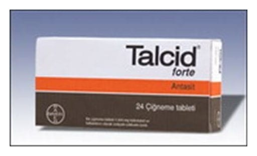

Talcid 500 mg/5 ml Kullanıma Hazır Süspansiyon, 200 ml

Ne için kullanılır
KT · Bölüm 1• Her ölçek (1 ölçek=5 mL) etkin madde olarak 500 mg hidrotalsit içerir. Hidrotalsit başlıca fazla mide asidini azaltarak etkisini gösterir. TALCİD, antiasit olarak adlandırılan ilaç grubunda yer alır.
• TALCİD beyaz renkli, yoğun süspansiyon formunda 200 mililitrelik cam şişelerde bulunur.
• TALCİD, mide asidinin fazlalığı ile seyreden durumlarda şikayetlerin giderilmesinde kullanılır. Bu durumlar arasında stres, aşırı yeme, kahve, alkol, nikotin ve bazı ilaçların neden olabileceği midede yanma, ekşime, şişkinlik, gaz gibi şikayetler ile akut gastrit (çeşitli nedenlerle ani olarak oluşan mide iltihabı), mide ve on iki parmak barsak (duodenum) ülserleri Bu KULLANMA TALİMATINI dikkatlice okuyunuz, çünkü sizin için önemli bilgiler içermektedir.
Bu ilaç sizin reçetesiz olarak temin edip bir doktor yardımı olmadan eczacınızın tavsiyesi ile hafif bir hastalığı tedavi etmeniz içindir. Buna karşın, yine de TALCİD’den en iyi sonuçları alabilmeniz için dikkatli kullanmanız gerekmektedir.
• Bu kullanma talimatını saklayınız. Daha sonra tekrar okumaya ihtiyaç duyabilirsiniz. • Eğer ilave sorularınız olursa, lütfen doktorunuza veya eczacınıza danışınız. • Bu ilaç kişisel olarak size reçete edilmiştir, başkalarına vermeyiniz. • Bu ilacın kullanımı sırasında, doktora veya hastaneye gittiğinizde doktorunuza bu ilacı kullandığınızı söyleyiniz. • Bu talimatta yazılanlara aynen uyunuz. İlaç hakkında size önerilen dozun dışında yüksek veya düşük doz kullanmayınız.